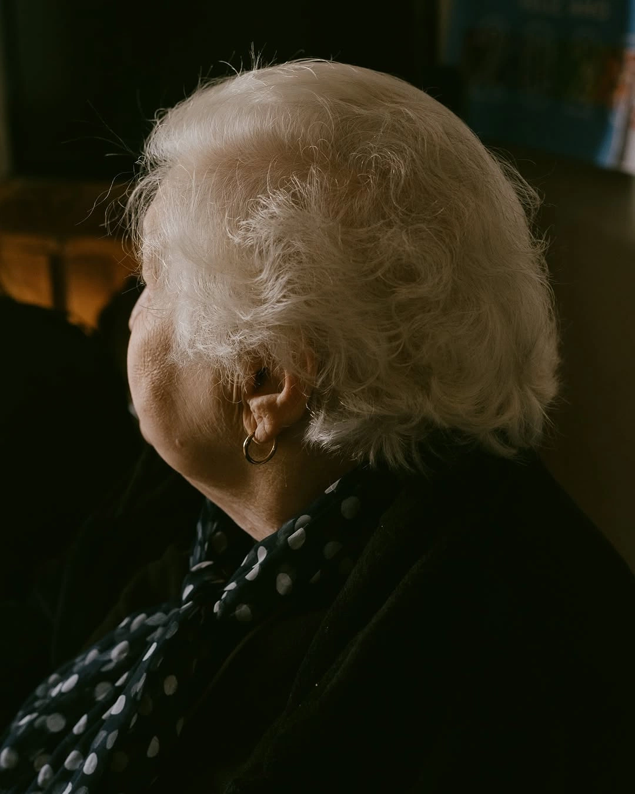
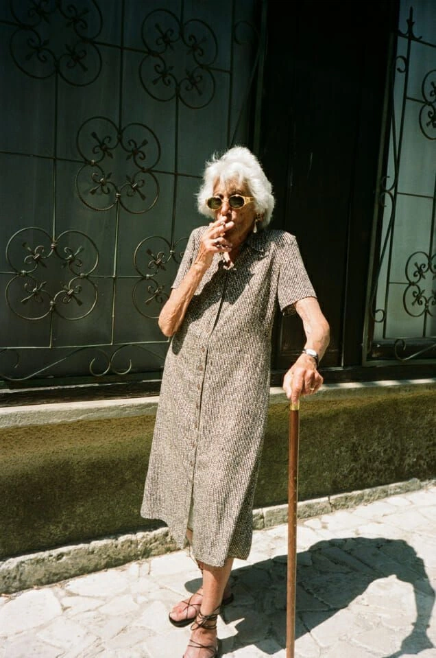
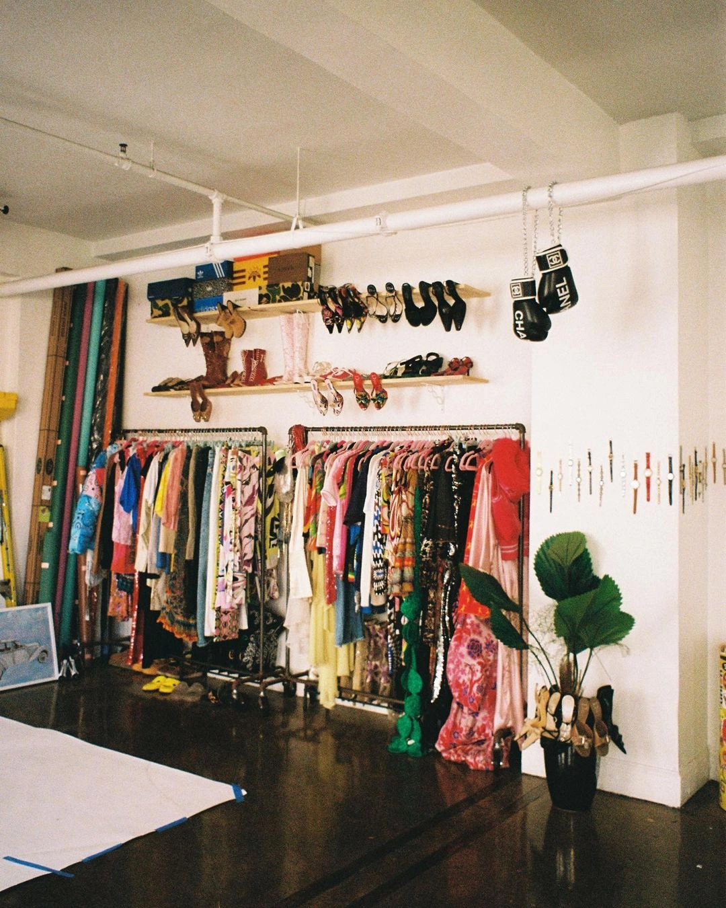

BRAND PROJECT
The Archive
An immersive vintage retail concept where every garment represents a moment in time.
01 — BRAND
Every piece tells a story.
The Archive is an immersive vintage retail experience where every garment represents a moment in time.

Rather than organizing clothing by category, the store is divided into decades, allowing visitors to explore the evolution of fashion, culture and everyday life.
Brand Mission
To preserve the stories woven into clothing while inspiring a new generation to create their own.
Vision
To redefine vintage shopping by transforming it into an emotional journey through time.
02 — BRAND VALUES
Storytelling
Every garment carries a story and becomes part of a larger narrative.
Sustainability
Giving existing clothing a new life instead of treating it as disposable.
Nostalgia
Using memories and different decades to create an emotional connection with fashion.
Connection
Creating experiences that connect people through clothing and memories.
03 — TARGET AUDIENCE
Who is The Archive for?
18–30 Year Olds
People looking for unique pieces who value individuality over mass-produced fashion.
Creative Students
Students in fashion, art, design and marketing who appreciate originality and concept-driven brands.
Vintage Enthusiasts
People already interested in secondhand fashion who appreciate a curated experience.
Fashion Lovers
People passionate about fashion, craftsmanship and strong brand identities.
04 — CAMPAIGN
Every Piece Has a Past.
Now it's part of yours.
The campaign encourages people to see clothing not as disposable products, but as objects carrying memories across generations.
Campaign Concept
The campaign turns a vintage garment into a storytelling device. Every piece carries traces of moments, people and memories from the past, while its new owner becomes part of that story.

Instead of simply selling a vintage jacket or dress, The Archive invites customers to become part of the story that the garment has already begun.
05 — CAMPAIGN VIDEO
A story told through memories.
A young woman walks into The Archive. She opens a wooden door and enters a silent room.
A record player begins and the lights slowly reveal different decades: the 1930s, 1940s, 1950s, 1960s and 1970s.
She reaches for an old leather jacket. The moment she touches it, quick flashes appear: a first date, friends dancing, a family Christmas, someone packing a suitcase, a graduation and a wedding.
The memories disappear. She smiles, puts the jacket on, and the screen fades.
06 — STORE EXPERIENCE
Shopping becomes a journey through time.
Instead of organizing clothing by style or size, each section of the store represents a different decade. The decoration and atmosphere follow the aesthetic of that period.

1950s
Black and white photographs, jazz and classic perfume scents.
1970s
Warm orange lighting, vinyl records and wood furniture.
1990s
Old magazines, disposable cameras and movie posters.
2000s
Flip phones, CD players and pop music.
Interactive Experiences
Memory Booth — Visitors write a memory inspired by something they found.
Record Your Story — Visitors answer prompts about clothing and memories while listening to anonymous stories from others.
Family Album Wall — A collection of vintage-style family photographs celebrating everyday life and changing fashion.
Timeline Floor — The floor guides visitors through different decades and important fashion moments.
07 — POP-UP EVENT
The Archive Weekend
Visitors bring one photograph and one family story.
In return, they receive a discount and their story becomes part of The Archive's digital collection.
08 — SOCIAL MEDIA STRATEGY
Instead of selling clothes...
Sell nostalgia.
The social media strategy extends the emotional positioning of the brand through storytelling, vintage pieces and customer experiences.
Guess the Decade
Interactive content encouraging audiences to identify different eras.
What's the oldest thing in your closet?
A conversation starter designed to encourage personal stories.
Recreating my grandma's outfit
Content connecting fashion with family memories.
Found this dress from 1978
Short-form storytelling around individual vintage pieces.
09 — WHY THIS WORKS
The Archive doesn't just sell clothing.
It sells connection.
The brand doesn't ask customers to buy a jacket because it is fashionable. It invites them to become part of a story that began decades ago and will continue with them.
This emotional positioning transforms vintage shopping into an immersive experience where every garment becomes a bridge between the past and the future.